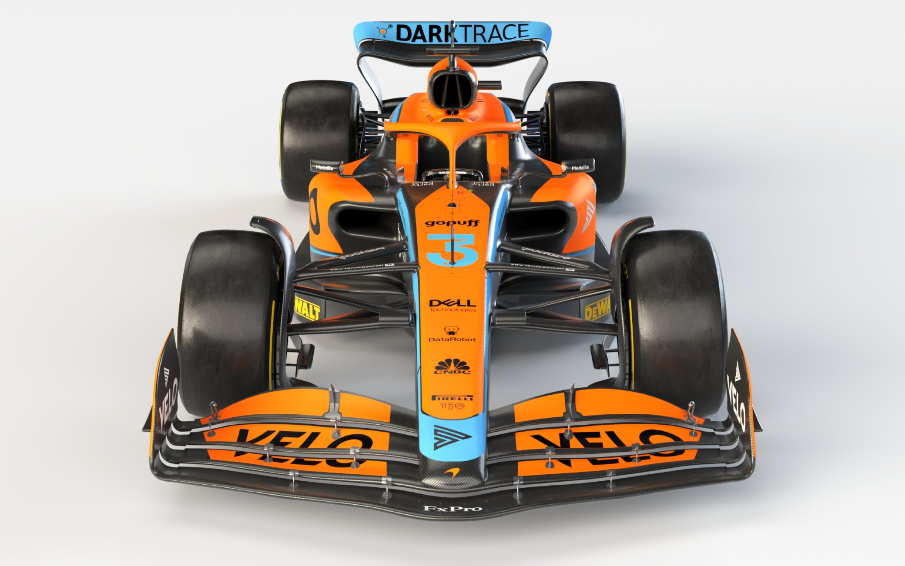

La McLaren è una scuderia britannica di Formula 1 con sede a Woking, nel McLaren Technology Centre. Dal 2018 viene iscritta al campionato mondiale di Formula 1 con il nome di McLaren F1 Team. Attualmente possiede anche una quota di maggioranza della squadra Arrow McLaren SP nella IndyCar Series. Fondata il 2 settembre 1963 dal pilota neozelandese Bruce McLaren (1937-1970), esordì nel 1966 ed è, insieme alla Williams, una delle più prestigiose scuderie britanniche della massima formula ancora in attività. Il team è parte del McLaren Group, holding che comprende anche le società McLaren Automotive che produce le vetture stradali, McLaren Electronic Systems che realizza le componenti elettroniche, fornite anche ad altre case nel campionato del mondo rally (oltre alla centralina MES con cui McLaren ha vinto l'appalto per la fornitura obbligatoria per tutti i team di F1), McLaren Applied Technologies che fornisce consulenze tecniche, McLaren Marketing e Absolute Taste. La proprietà del gruppo è così divisa: il 25% appartiene a Mansour Ojjeh, mentre il rimanente 75% è della società di investimenti Bahrain Mumtalakat Holding[2], presente dal 2007 nel capitale McLaren. La McLaren è una delle più titolate scuderie della storia del campionato di Formula 1, con 8 titoli costruttori, e 12 titoli complessivi vinti dai suoi piloti Emerson Fittipaldi, James Hunt, Niki Lauda, Alain Prost, Ayrton Senna, Mika Häkkinen e Lewis Hamilton. In passato, vetture McLaren hanno corso in altre categorie automobilistiche, dominando completamente il campionato CanAm, tra il 1967 e il 1972, con cinque titoli piloti consecutivi, ottenendo tre vittorie alla 500 Miglia di Indianapolis negli anni settanta, e vincendo la 24 Ore di Le Mans nel 1995. La McLaren è pertanto ad oggi l'unica scuderia al mondo, oltre alla Mercedes, ad aver ottenuto almeno una vittoria in ciascuna delle tre più prestigiose competizioni automobilistiche (campionato di Formula 1, 500 Miglia di Indianapolis e 24 Ore di Le Mans). Attraverso la divisione Applied Technologies è attiva anche su altri fronti, tra cui la sperimentazione di un software per ottimizzare il traffico aereo a Heathrow e ridurre i ritardi in atterraggio e decollo degli aerei[3]. Dal 2011 ha ripreso l'attività di costruttore di automobili producendo la 12C in versione coupé e cabrio e la supercar P1. Nel 2011 sono state prodotte 400 auto mentre nel 2012 1586 auto.
Monoposto 2022
La McLaren MCL36 è una monoposto di Formula 1 costruita dalla scuderia inglese McLaren per disputare il campionato mondiale di Formula 1 2022. La vettura è stata presentata il 12 febbraio 2022 all'interno del McLaren Technology Centre. La livrea della MCL36 si discosta dalle monoposto di Woking degli ultimi anni: il colore alla base è il nero, non più così presente sulle livree McLaren dalla MCL32, mentre lo storico arancione papaya rimane il colore predominante. Il blu utilizzato sulle precedenti vetture fa spazio al celeste. L'arancione si trova sui tre flap superiori e sugli endplate dell'ala anteriore, nella striscia centrale che parte dal muso — dove è contornato da due strisce celesti che si uniscono sulla punta del muso —, che continua anche sull'halo e che termina sul cofano motore e in una vasta area su ciascuna pancia laterale. Tali aree sono sottostate da una sottile striscia celeste, la quale continua verso il retro della vettura, fino alle ruote, dove si allarga e si solleva obliquamente. I lati del muso e della cellula di sopravvivenza, invece, hanno sfondo nero. Sul cofano motore, all'altezza del poggiatesta, è presenta una banda orizzontale nera che separa l'arancio delle pance e della striscia centrale e nel quale sono presenti alcuni sponsor. Il celeste si trova anche sull'ala posteriore, più precisamente nella zona laterale e sull'ala mobile del DRS, in una sottile riga che parte dagli attacchi posteriori dell'Halo e che attraversa il cofano sulla banda nera e infine di questo colore sono anche i numeri di gara. Il resto della vettura, come la parte inferiore delle pance insieme al fondo e parte delle ali anteriore e posteriore, ha il colore della base.